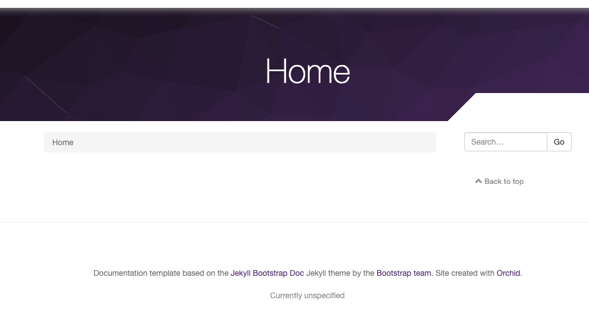

目次
Orchidとは
こんにちは。karintomania(twitter)です。
OrchidはJavaで作られた静的サイトジェネレータです。
Orchid公式
本記事ではその公式チュートリアルに沿って簡単なサイトを作ってみます。
Why Orchid?
ぶっちゃけJavaが好きってだけです。
結論から言うとブログ書くだけの用途で使うにはtoo muchに感じました。
ただブログを作りたい、ってだけの人は他のやつの方がいいです。Jekyllでもなんでも使いましょう(元も子もない)。
本来はJavaとかKotlinのプロジェクトのドキュメンテーションを想定して作られているみたいなので、そういう人はしっかり使えるのかもしれません。
ただ、JavaとGradleの勉強も兼ねてJavaで書かれたサイトジェネレータがあれば使いたいなと思っていたところに、
こちらのサイトで探したところ、Orchidを見つけ、試してみることにしました。
https://www.staticgen.com/
余談
っていうかJava製のジェネレータ少ないですね。
言語のシェアで言えばJavaで人気のやつが一個くらいあってもいいのに。。。
逆になんでやたらとJavascript製のジェネレータが多いんだろうか。。。
ちなみにこのサイト、他にもR言語で書かれたジェネレータとかあって見てるだけで地味に面白い。
前提
それでもOrchid触ってみたいって人は先に進みましょう。
Orchidを始める際には以下が必要です。
- JDK8
- Gradle
導入方法
公式チュートリアルに沿っていけば大体理解できます。
と言っても所々ハマったので、少し解説します。
gradleプロジェクトの作成
まずはgradleプロジェクトを作成します。
1 | cd ~/Documents/personal/orchid |
gradle initを打つと諸々質問されるのですが、
全部デフォルトで大丈夫です。Enterキー連打で。
設定ファイルが生成されたら、build.gradleを編集します。
プラグインにcom.eden.orchidPluginを追加して、
末尾にDependencyを追加します。
注意
Tutorialではversion0.18.0を使っているのですが、
以下リンクから最新を取ってきてください。本記事執筆時は0.18.2でした。
私の環境だと、0.18.0のプラグインが取ってこれずエラーになることがありました。
https://plugins.gradle.org/plugin/com.eden.orchidPlugin
build.gradleはこんな感じになるかと思います。
1 | /* |
サーバの起動
orchidの操作はgradleのコマンドで行います。
以下を打つことでソースがビルドされ、ローカルサーバが立ち上がります。
1 | gradle orchidServe |

http://localhost:8080/ にアクセスしてみましょう。
ページが表示されましたか？
ホームページの追加
次にhomepage.mdを作ってみます。
ホームページはトップページみたいなもので最初に表示されるページです。
Tutorialでは、src/orchid/resources/にhomepage.mdを追加しましょう、と言っているのですが
この時点ではsrc/orchid/resources/は存在しません。
どうするかというと、src/mainがあると思うので、これをsrc/orchidに名前を変えてその中にhomepage.mdを追加してください。
（これが分からずにしばらくハマった。この辺の分かり難さをどうにかして欲しいです。）
1 | ## Hello, Orchid |
さて、ホームページが追加されたでしょうか。
続いて普通のページも置いてみます。
ページはsrc/orchid/resources/pages/配下に置きます。
公式Tutorialではビジネスのサイトと仮定してpages/loactions/配下に各支店情報を置くようになっています。
それに沿ってやってみましょう。
locaions/配下にhouston.md, austin.md, dallas.mdを置いてみてください。
下記はhouston.mdです。
1
2
3
4
5
6
7
8
9
10
11
12
13
14
15
16
17
18
19## Location
Houston, TX
## Address
1234, Example Dr.
Houston, TX, 12345
## Phone
(123) 456-7890
## Business Hours
M-F: 6am - 9pm
Sa: 6am - 10pm
Su: Closed
http://localhost:8080/locations/houston
このアドレスにアクセスするとhouston店の情報が表示されるはずです。
これでmarkdownを表示させることができました。
その他の機能
本記事では言及しませんが、Orchidはサイトジェネレータとして様々な機能を持っています。
特にテンプレートの考え方やAdminパネルと呼ばれる管理画面が面白い印象でした。
たくさんのページに一括で変更を入れるようなサイトには、メリットが大きい印象でした。
興味があればその先のTutorialもやってみてください。
所感
最後に触ってみて思ったところを書きます。
まず、高機能が故の複雑さ、みたいなところがあります。
例えば、Themeの見た目を変えてみたかったのですが、
結局どこを触ればいいかわからないままチュートリアルが終わってしまいました。
また、ファイルなどもいちいち自分で作らないといけないので、
その辺りをコマンド一発でやってくれるHexoと比べて見劣りしてしまう感じがします。
とはいえ、貴重なJava製の静的サイトジェネレータとして今後に期待したいところではあります。
今日はこの辺で。